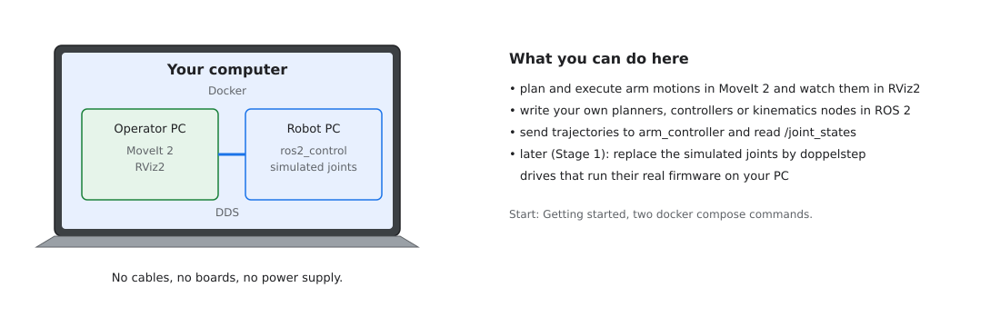
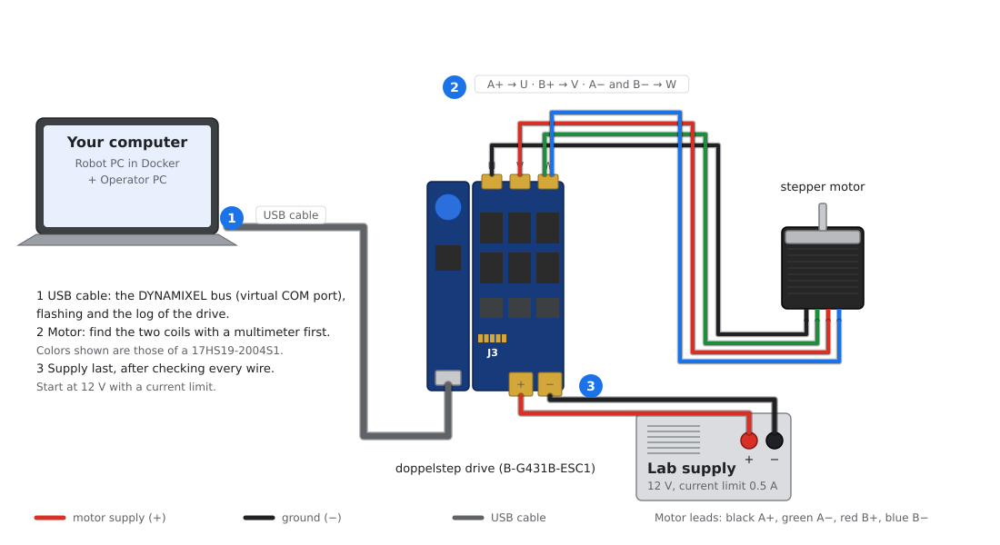
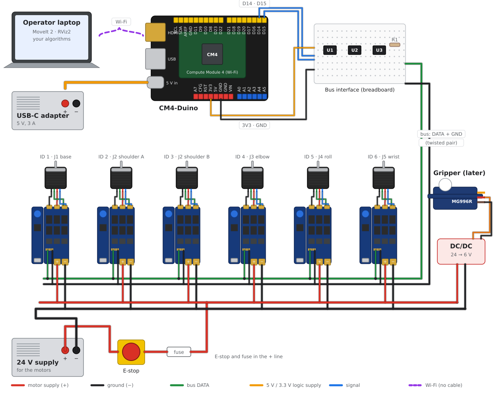
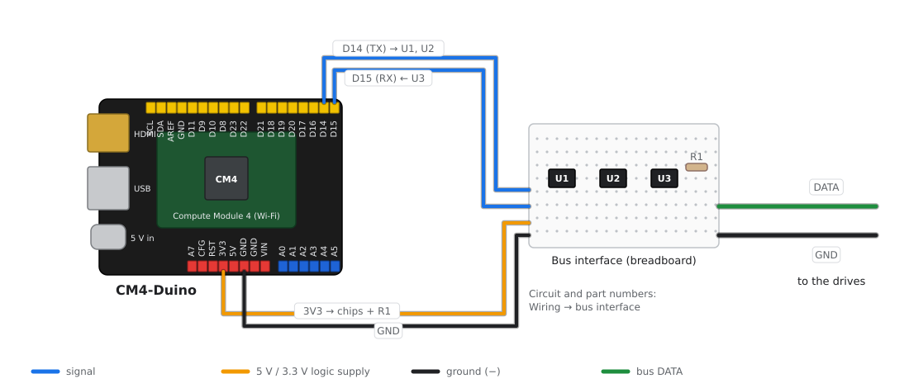
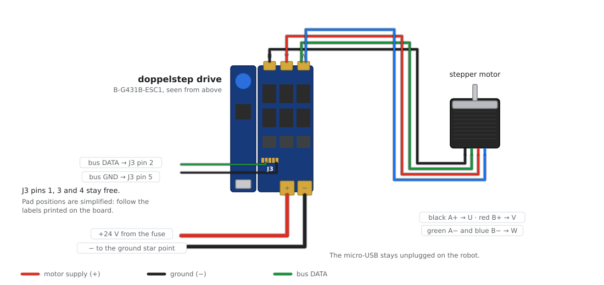

Connection guide for beginners¶
This page is for readers who want to work on robotics algorithms — motion planning, kinematics, control, trajectories — and are not (yet) at home in electronics. It shows in pictures what is connected to what, in three levels. You can stop at any level: everything above level 1 is optional.
SmartManipulator-X is part of the SystemFromScratch® portfolio and is also meant for teaching. All parts are open source: this Robot PC repository, the Operator PC and the doppelstep drive firmware (documentation) are published under the Apache License 2.0. Use them, study them, change them.
Educational material, at your own risk
This guide is provided as is, without warranty (Apache License 2.0, sections 7 and 8). Levels 2 and 3 use mains-powered supplies, 24 V and moving mechanics. You build and power the hardware at your own risk: follow the safety rules and, if you are unsure, ask someone experienced to check your wiring before the first power-up.
Status (2026-11-15): level 1 works today. Levels 2 and 3 describe the planned hardware (project status); the pictures are the target to build towards. The drawings are simplified: on a real board, follow the labels printed next to the pads.
The three levels at a glance¶
| Level | What you need | What you can do | State |
|---|---|---|---|
| 1 · Simulation | One computer with Docker | Plan and execute arm motions, write ROS 2 nodes, test algorithms against simulated joints | Works |
| 2 · One joint on the desk | Level 1 + one drive board, one stepper motor, a lab supply, a USB cable | Run your trajectories on a real motor, see real timing and limits | Planned (Stage 2) |
| 3 · The whole robot | The arm, six drives, the Robot PC board, supplies, a small interface circuit | Run your algorithms on the real arm | Planned (Stages 3–4) |
Level 1: everything on one computer¶

Nothing to connect. Two Docker containers play the two computers of the real system: the Operator PC plans motions (MoveIt 2, RViz2), the Robot PC executes them with simulated joints. They talk over ROS 2 exactly as they will over Wi-Fi on the real robot, so code written here is built to run on the real arm without changes.
Start with Getting started. The interface your algorithms use — joint names, topics, controllers — is the joint contract of the Robot PC.
Level 2: one joint on the desk¶

The smallest real hardware: one drive board (an ST B-G431B-ESC1 running the doppelstep firmware) and one stepper motor. To your computer the drive looks like a ROBOTIS DYNAMIXEL smart servo, so the same Robot PC software drives it.
- USB cable from your computer to the micro-USB socket of the drive. It carries the commands, the firmware update and the log.
- Motor, four wires. A stepper motor has two coils (A and B). Find which two wires belong together with a multimeter (a few ohms between the two wires of one coil, nothing between different coils). Then: A+ to U, B+ to V, A− and B− together to W.
- Supply last. A laboratory power supply at 12 V with the current limit set low (about 0.5 A) to the + and − pads. Red is +, black is −.
Before the first motor turns, the drive needs a one-time check described in the doppelstep bring-up checklist.
Level 3: the whole robot¶

Read the picture from top to bottom:
- Operator laptop — your computer with MoveIt 2 and your algorithms. It reaches the robot over Wi-Fi; no cable.
- CM4-Duino — the Robot PC on the robot: a Raspberry Pi Compute Module 4 on a small carrier board. It has its own USB-C power adapter (5 V).
- Bus interface — three tiny logic chips on a breadboard that turn the two UART pins of the CM4 into the single-wire bus of the drives.
- The bus — just two wires (DATA and GND, twisted together) from the interface to every drive. Each drive has its own number (ID 1–6), so one pair of wires reaches all of them.
- Six drives with six motors — one drive per motor; the shoulder has two motors.
- 24 V supply — powers the motors through an emergency stop button and a fuse. A small converter makes 6 V for the gripper servo (a later project).
Close-up: the CM4-Duino and the bus interface¶

Four jumper wires go from the CM4-Duino to the breadboard: D14 (send), D15 (receive), 3V3 (power for the chips) and GND. The circuit and the part numbers are on the Wiring page. The chips come in very small packages; solder each onto a small SOT-23-to-DIP adapter board so it fits the breadboard.
Close-up: one drive¶

Every drive gets the same eight wires: four from its motor, two from the 24 V supply, two from the bus (J3 pin 2 = DATA, J3 pin 5 = GND). The other J3 pins stay free, and the USB socket stays unplugged on the robot.
Parts list¶
| Part | Level | Notes |
|---|---|---|
| Computer with Docker | 1 | Windows (WSL 2), Linux or macOS |
| ST B-G431B-ESC1 | 2: one, 3: six | Drive board, flashed with doppelstep |
| Stepper motors | 2: one, 3: six | The arm's motors are listed in Joint motors |
| Laboratory power supply with current limit | 2 | 12 V for the first tests |
| USB cable (micro-USB) | 2 | Data cable, not a charge-only cable |
| Raspberry Pi CM4 with Wi-Fi + Waveshare CM4-Duino | 3 | The Robot PC (CM4-Duino) |
| USB-C power adapter, 5 V ≥ 3 A | 3 | For the CM4-Duino only |
| 24 V power supply | 3 | Size it for the motors; 24 V / 10 A gives comfortable headroom for this arm (rule of thumb, not a measurement) |
| Emergency stop button and fuse holder | 3 | In the + line of the 24 V supply |
| 74LVC1G07, 74LVC1G04, 74LVC1G32, 470 Ω, 100 Ω, 100 pF, 3 × 100 nF | 3 | Bus interface; with SOT-23-to-DIP adapters for the breadboard |
| Breadboard, jumper wires | 3 | Female-to-male jumpers fit the CM4-Duino headers |
| Wire | 3 | Supply and motor wires at least 0.5 mm² (0.75 mm² for the 24 V rail); thin twisted pair for the bus |
| Multimeter | 2, 3 | To find motor coils and to check wiring before power-up |
Words you will meet¶
| Word | Meaning here |
|---|---|
| Bus | One pair of wires shared by several devices; each answers only to its own ID |
| DATA / GND | The two bus wires: the signal, and the common reference (ground) |
| Ground (GND, −) | The 0 V reference. All grounds of the system meet at one point |
| Drive | The board that turns commands into motor current |
| Coil | A stepper motor has two; each has two wires |
| Supply (PSU) | Turns mains into 24 V (motors) or 5 V (CM4-Duino) |
| DC/DC converter | Turns one DC voltage into another (24 V to 6 V for the servo) |
| E-stop | A big red button that cuts motor power immediately |
| DYNAMIXEL | A family of ROBOTIS smart servos; our drives speak their protocol |
Safety rules¶
- Connect and disconnect wires only with all supplies off. A stepper unplugged while powered can destroy its drive.
- Check every connection with the multimeter before the first power-up: no short between + and −.
- First power-up on a lab supply with a low current limit; the 24 V supply only when everything works.
- Keep the emergency stop within reach and hands out of the arm's reach while it moves.
- The logic pins of the CM4-Duino accept only 3.3 V: never connect 5 V or 24 V to them.
Next steps¶
- Algorithms: Robot PC (joint contract, controllers), Operator PC (MoveIt 2).
- Hardware details: Wiring, DYNAMIXEL bus, doppelstep drives, CM4-Duino.
- What is done and what comes next: Project status, integration plan.